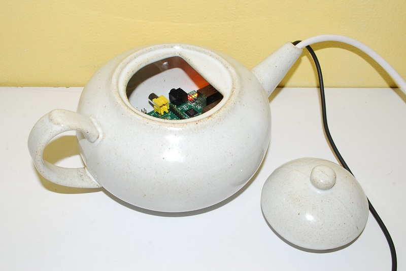

The Samsung IoT Security Research Team disclosed today (1st April 2018) a serious vulnerability in an essential component of critical office infrastructure - coffee machines. This is also an announcement of a new type of vulnerability - Coffee Overflow error, also called "Licence to Leak". Based on our research, this vulnerability can be found in a large number of Internet connected coffee machines from multiple vendors, all implementing Hyper Text Coffee Pot Control Protocol (HTCPCP/1.0), as described in RFC 2324 published on 1 April 1998 [1].
We have contacted multiple vendors, but none of them has yet fixed the issue. Additionally, this vulnerability was confirmed by independent and anonymous coffee tasters.
Due to the 20th anniversary of HTCPCP, we have decided to announce our finding immediately, releasing also an exploit script (included below).
RFC 2324 section 2.2.2.1 defines a special "Accept-Additions" header with the following BFN rules:
Accept-Additions = "Accept-Additions" ":"
#( addition-range [ accept-params ] )
addition-type = ( "*"
| milk-type
| syrup-type
| sweetener-type
| spice-type
| alcohol-type
) *( ";" parameter )
milk-type = ( "Cream" | "Half-and-half" | "Whole-milk"
| "Part-Skim" | "Skim" | "Non-Dairy" )
syrup-type = ( "Vanilla" | "Almond" | "Raspberry"
| "Chocolate" )
alcohol-type = ( "Whisky" | "Rum" | "Kahlua" | "Aquavit" )
The main problem is that the RFC does not strictly define the parameter for alcohol-type variables. Most of the coffee machines vendors used a 16-bit unsigned integer, while larger values are also possible, depending on different alcohol bottle sizes.
The following HTCPCP request can be used to leak coffee by overflowing alcohol-type parameters:
BREW kafo:/pot-0 HTCPCP/1.0
Content-Type: message/coffeepot
Accept-Additions: Whisky;32777,Rum;-1
Please use the below command to test your coffee machine:
echo -e "BREW kafo:/pot-0 HTCPCP/1.0\nContent-Type: message/coffeepot\nAccept-Additions: Whisky;32777,Rum;-1\r\n\r\n" | nc <ip of coffee machine> <port of coffee machine>
Example of vulnerable machine:
Implementation of HTCPCP [2]
If your coffee machine is responding with an error message "418 I'm a teapot", this may be an indication of a coffee machine malware called APT (Advanced Persistent Teapot) serving potions containing reduced doses of caffeine, leading to reduced work efficiency and paltry code quality.
Long live HTCPCP and save the HTTP 418 status code!